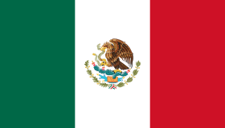
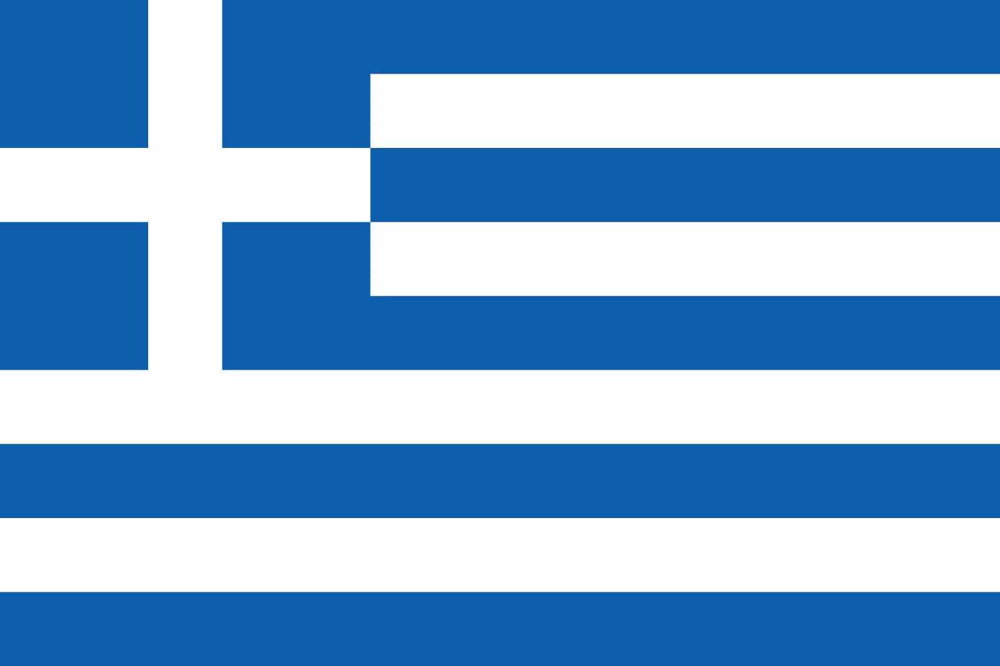

TOYOTA RACING
01-10-2000 (23 yaşında)
Finlandiya
TOYOTA RACING
28-12-1988 (35 yaşında)
Birleşik krallık
HYUNDAI MOTORSPORT
16-06-1988 (35 yaşında)
Belçika
M-SPORT
15-10-1987 (36 yaşında)
Estonya
TOYOTA RACING
17-12-1983 (40 yaşında)
Fransa
HYUNDAI MOTORSPORT
17-01-1991 (32 yaşında)
Finlandiya
TOYOTA RACING
17-03-1993 (30 yaşında)
Japonya
HYUNDAI MOTORSPORT
02-05-1983 (40 yaşında)
Avustralya
HYUNDAI MOTORSPORT
01-02-1994 (29 yaşında)
Finlandiya

HYUNDAI MOTORSPORT
23-09-2001 (22 yaşında)
İsveç

HYUNDAI MOTORSPORT
22-06-1989 (34 yaşında)
Norveç
M-SPORT
18-02-1997 (26 yaşında)
Fransa
| WRC 2023 YARIŞ PROGRAMI | |
|---|---|
| ETKİNLİK | TARİH |
 MONTE CARLO RALLİSİ MONTE CARLO RALLİSİ |
19 * OCAK 11:31 |
 İSVEÇ RALLİSİ İSVEÇ RALLİSİ |
09 * ŞUBAT 11:01 |
| MEKSİKA RALLİSİ | 16 * MART 19:01 |
 HIRVATİSTAN RALLİSİ HIRVATİSTAN RALLİSİ |
20 * NİSAN 10:01 |
 PORTEKİZ RALLİSİ PORTEKİZ RALLİSİ |
11 * MAYIS 11:01 |
| İTALYA RALLİSİ | 01 * HAZİRAN 10:01 |
| KENYA RALLİSİ | 21 * HAZİRAN 10:01 |
| ESTONYA RALLİSİ | 20 * TEMMUZ 09:01 |
| FİNLANDİYA RALLİSİ | 03 * AĞUSTOS 09:01 |
| YUNANİSTAN RALLİSİ | 22 * AĞUSTOS 00:00 |
 ŞİLİ RALLİSİ ŞİLİ RALLİSİ |
28 * EYLÜL 14:01 |
 ORTA AVRUPA RALLİSİ ORTA AVRUPA RALLİSİ |
25 * EKİM 17:01 |
 JAPONYA RALLİSİ JAPONYA RALLİSİ |
16 * KASIM 03:01 |

Toyota, 2024 Dünya Ralli Şampiyonası'nda yarışacağı yeni WRC aracının örtüsünü kaldırdı. Son dünya ralli şampiyonu Toyota, 2017'de WRC'ye geri dönmesinden bu yana kırmızı ve beyaz renklerinden oluşan geleneksel renk düzenini kullanıyordu. Fakat 2024 yılında yeni mat siyah bir renk düzenine geçiş yapma kararı aldılar. Toyota, 2024 Dünya Dayanıklılık Şampiyonası'nda mücadele edeceği GR010 Hypercar aracında da aynı renk düzenini kullanacak. Toyota Başkanı Akio Toyoda, "Aracımız, şimdiye kadar Japonya'yı temsil ettiği için kırmızı ve beyazdı, ancak benzer renklere sahip birçok araç var, bu yüzden değişiklik istedik." dedi. Geçtiğimiz ay Toyota, gelecek sezon GR Yaris'i kullanacak isimlerin 2023'le aynı olacağını doğrulamıştı.. Fakat çifte dünya ralli şampiyonu Kalle Rovanpera, 2024 yılında yarım sezon yarışacak ve üçüncü aracı Sebastien Ogier ile paylaşacak. Bu yılı şampiyona ikincisi olarak tamamlayan Elfyn Evans ise Takamoto Katsuta ile birlikte tam sezon mücadele edecek. GR Yaris bu yılki 13 rallinin dokuzunu kazanarak en iyi araç olurken, yeni sezonda aracın daha da geliştirilmesi hedefleniyor.
Hankook, 2025 yılından itibaren Dünya Ralli Şampiyonası'nın yeni lastik tedarikçisi olacak. Temmuz ayında bir lastik ihalesi başlatan FIA, yapılan başvurular sonrası 2025-2027 yıllarını kapsayan üç yıllık dönem için Hankook'ta karar kıldı. Son yıllarda WRC'nin tek lastik tedarikçisi Pirelli'ydi ve dört yıllık sürecin ardından artık bu görevi Güney Koreli üretici devralacak. İtalyan üretici, 2024 sonrasında lastik tedariğine devam etme konusunda herhangi bir teklifte bulunmadı. FIA'dan yapılan açıklamada, WRC'nin talebinin Dünya Motor Sporları Konseyi tarafından onaylandığı, bunun da üç yıl boyunca Hankook'un WRC'ye lastik tedarik edeceği anlamına geldiği belirtildi. Hankook, sürdürülebilirlik, tedarikçi yeteneği, teknik kalite, lastik başına maliyet ve pazarlama gibi pek çok kriterin değerlendirmesi sonucu seçildi. Bu, 2024'ün Pirelli'nin WRC'deki son senesi olacağı anlamına geliyor.
2003 dünya ralli şampiyonu Petter Solberg'in oğlu Çek üretici ile yeni bir anlaşma imzalayarak 2024 yılında WRC'nin ikinci kategorisinde yarışacak. Solberg'in gelecek yıl M-Sport-Ford'daki boş koltuklar nedeniyle Rally1'e yükselebileceği konuşuluyordu. 22 yaşındaki pilotun yeni anlaşması, bu yıl İsveç ve Şili'de WRC2 galibiyetlerini de aldığı Toksport Skoda takımı yerine doğrudan Skoda Motorsport ile oldu. Solberg'in Skoda Fabia RS Rally2'si bir kez daha uzun süredir sponsoru olan Monster Energy tarafından desteklenecek.